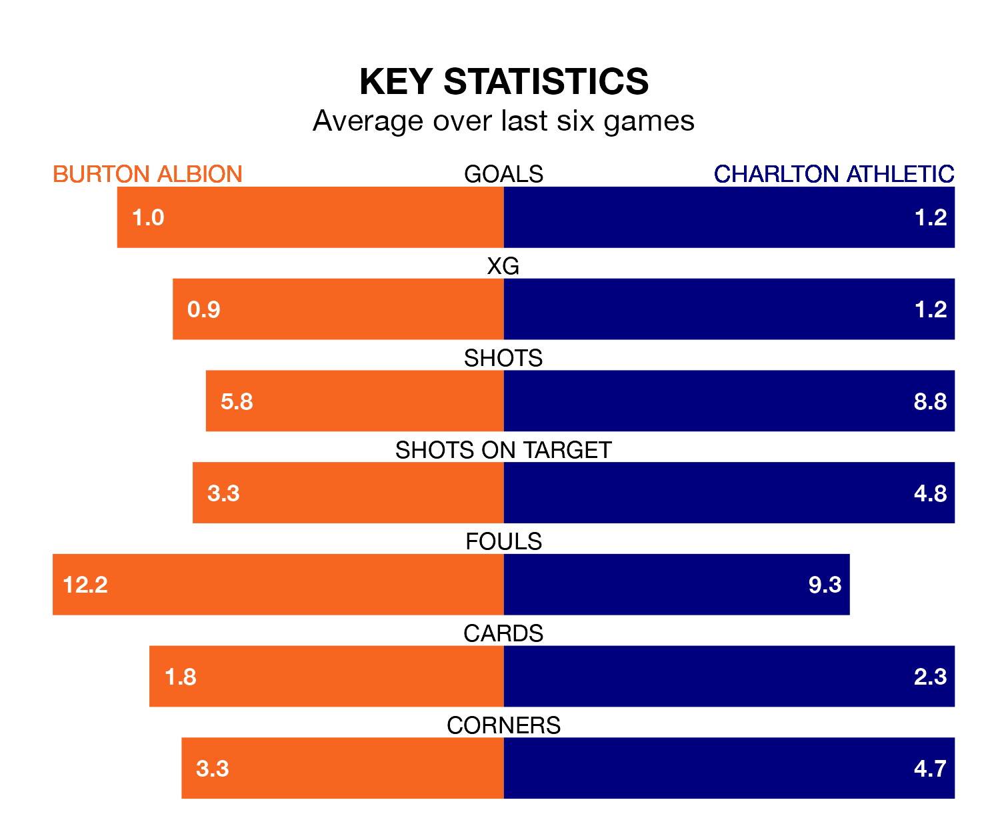

Charlton Athletic come to the Pirelli Stadium to play Burton Albion on Saturday in terrible form, having collected just two points from their last six games.
The visitors have drawn two and lost four of their last six fixtures, while the Brewers have two wins and two draws.
In Alfie May, Charlton have the league's most on-form striker so far this season. He has notched 16 goals in 23 appearances.
His goal rate of one every 129 minutes is much quicker than that of Beryly Lubala, Burton's top scorer with a goal every 300 minutes, and a total of five goals in 19 games.
In the last 10 years, Burton and Charlton have played each other on nine occasions. Burton won two of them, Charlton five, and they drew twice.
On average, the Brewers scored 1.6 goals and the Addicks 1.9 in those matches.
Their last meeting was on December 23, when they played out a 1-1 draw.
With 23 goals in 27 games so far this season, Albion are scoring at below the league average rate with 0.9 goals per game. And they are conceding more than average, letting in 38 goals at a rate of 1.4 per game.
Athletic, meanwhile, are above average scorers, with 1.5 goals per game, compared to a league average of 1.3. They have also conceded 1.5 goals per game.
The Brewers are 19th in the table after 27 games, of which they have won seven and drawn seven, earning 28 points.
The Addicks are five places ahead of the hosts in 14th, with seven wins and nine draws putting them on 30 points.
Burton's last match was on Monday, a 3-2 loss against Derby County, with Joe Hugill and Steve Seddon getting the goals for the Brewers.
Charlton lost 2-1 against Peterborough United last time out, on January 13, with May on the scoresheet.
Saturday's match will be refereed by Alan Young, who has taken charge of five EFL League One games so far this season, issuing two red cards and booking 30 players. He has awarded one penalty.
The last Burton game Young refereed was a 4-0 away loss to Peterborough United on November 25. He is yet to oversee a match featuring Charlton this season.
Updated: 10:02 (UTC), 19/01/24